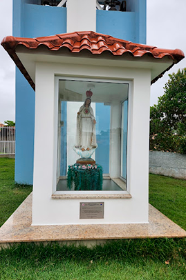
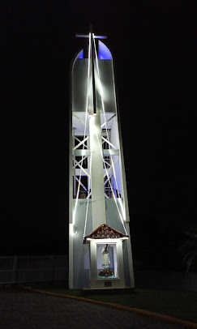
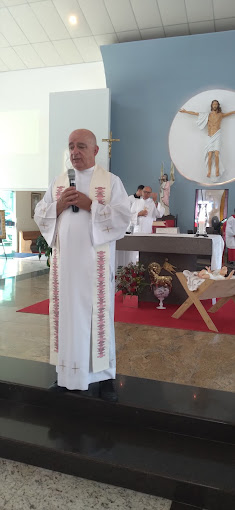

Mural de Fotos

Jesus no Natal

Capela da Igreja

Torre da Igreja
Padre Adão Carlos M. Marcelino

Sobre
- Naturalidade: Armazém – SC - Data de Nascimento: 07.06.1961 - Ordenação Diaconal: 03.07.1988 - Ordenação Presbiteral: 08.12.1988 - Ofício atual: Pároco da Paróquia Nossa Senhora da Imaculada Conceição, Bombas, Bombinhas – SC
Conheça um pouco mais sobre a vida pastoral do Padre Adão:
- 29.01.1989 – Vigário Paroquial da Paróquia Senhor Bom Jesus de Nazaré, Palhoça – SC - 22.03.1990 – Vigário Paroquial da Paróquia Nossa Senhora de Fátima e Santa Teresinha do Menino Jesus, Estreito, Florianópolis – SC - 29.03.1990 – Vigário Paroquial da Paróquia São Judas Tadeu, Barreiros, São José – SC - 22.01.1991 – Vigário Paroquial da Paróquia Senhor Bom Jesus de Nazaré, Palhoça – SC - 14.06.1991 – Pároco da Paróquia Senhor Bom Jesus dos Aflitos, Porto Belo – SC - 22.12.1993 – Missionário na Diocese de Barra, Paróquia de Oliveira dos Brejinhos, Bahia – BA - 16.09.2002 – Administrador Paroquial da Paróquia Sant’Ana, Canelinha – SC - 20.12.2002 – Pároco da Paróquia Santa Catarina, Dom Joaquim, Brusque – SC - 2007 a 2009 – Representante da Comarca de Brusque no Conselho Presbiteral da Arquidiocese, Florianópolis – SC - 10.02.2013 – Pároco da Paróquia Nossa Senhora do Rosário, São José – SC - 01.01.2017 – Vigário Forâneo da Forania São José-Barreiros para o biênio 2017/2018 - 01.01.2019 – Vigário Forâneo da Forania São José-Barreiros para o biênio 2019/2020 - 05.02.2023 – Pároco da Paróquia Nossa Senhora da Imaculada Conceição, Bombas, Bombinhas – SCContato e Horários
Endereço: R. Flamingo, 150 - Bombas, Bombinhas - SC, 88215-000
Telefone: (47) 3369-1561
Horários: Missa do sábado ás 19h30, domingos às 8h e encontros durante a semana.